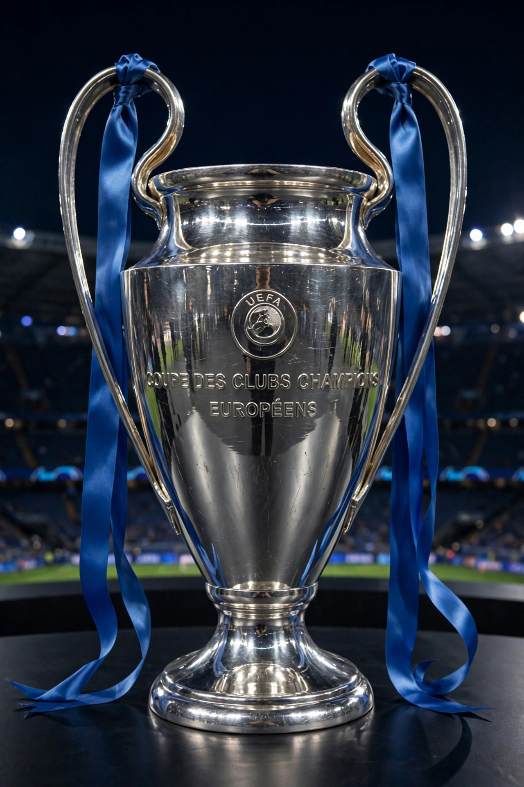

From Wikipedia, the free encyclopedia
| UEFA Champions League | |
|---|---|
 The European Cup trophy, a large silver cup with two big handles, the 'big ears' | |
| Founded | 1955 (as European Cup); rebranded 1992 |
| Organiser | UEFA |
| Teams | 36 (league phase, from 2024–25) |
| Current champions | Paris Saint-Germain (2024–25) |
| Most successful | Real Madrid (15 titles) |
| Top goalscorer | Cristiano Ronaldo (140) |
The UEFA Champions League (UCL) is an annual club association football competition organised by the Union of European Football Associations (UEFA) and contested by top-division European clubs. It is the most prestigious club competition in world football and one of the most watched annual sporting events.
Introduced in 1955 as the European Champion Clubs' Cup (European Cup), it was originally a straight knockout tournament for league champions. It was rebranded in 1992 with a group stage added, and from 2024–25 it uses a 36-team single league phase under the "Swiss model". The final is played at a pre-selected stadium each May/June; the famous anthem, adapted from Handel's Zadok the Priest, is played before every match.
Real Madrid won the first five editions (1956–1960) with the team of Alfredo Di Stéfano and Ferenc Puskás, and remains the record holder with 15 titles, most recently in 2024. Other multiple winners include AC Milan (7), Bayern Munich and Liverpool (6), FC Barcelona (5) and Ajax (4). Paris Saint-Germain won its first title in 2025, defeating Inter Milan 5–0 in Munich — the largest margin in a final. Cristiano Ronaldo is the competition's all-time top scorer and its most decorated modern player alongside Lionel Messi.
Categories: UEFA Champions League | UEFA club competitions | Recurring sporting events established in 1955